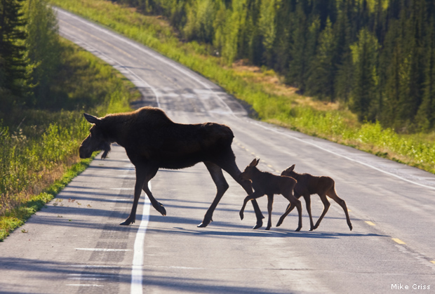

Home
Wildlife Collisions by the numbers

A 2008 Congressional study found that one in 20 reported motor vehicle collisions in the United States are related in one way or another to
animals. These numbers also peak during Fall season, with more than 30,000 injuries and 200 human deaths. These collisions cost more than $9 billion
per year, including vehicle repair costs, medical services etc.